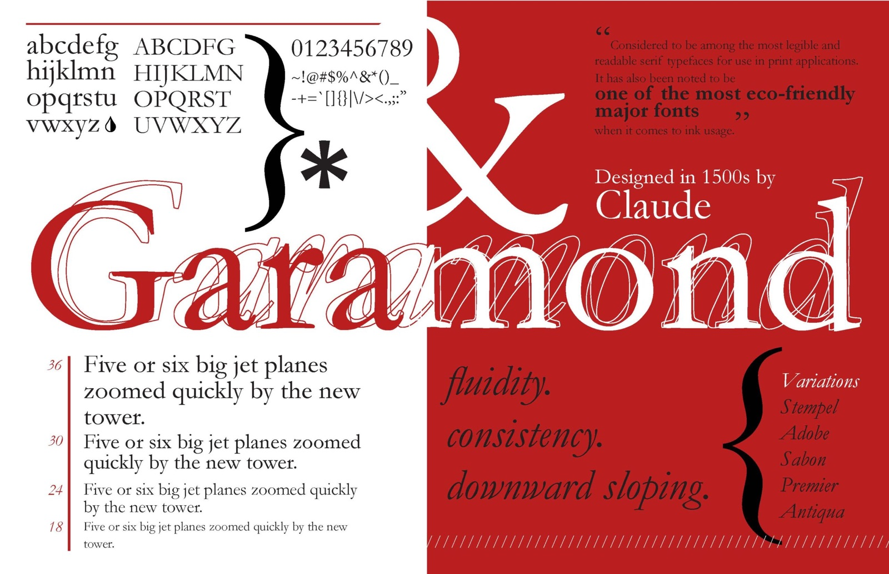
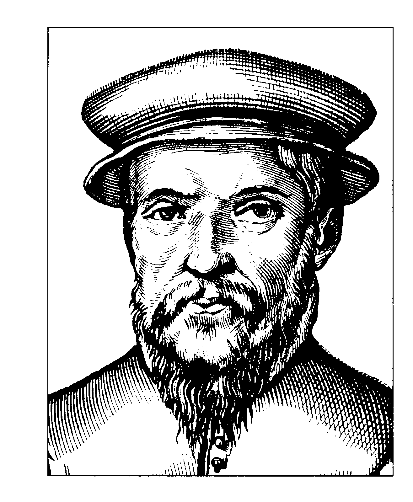
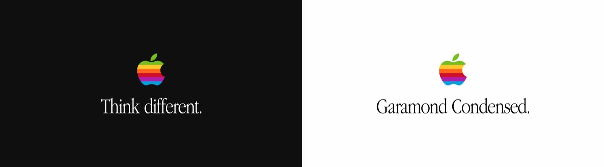

On this page

The embodiment and peak of the classical Renaissance calligraphic tradition.

Designed by:
Claude Garamond
Foundry:
Originally cut and cast independently in Paris
Country:
🇫🇷 France
Year:
1530’s
Intent:
- Designed to improve the readability and elegance of book typography
- Based on Roman letterforms
- Intended to feel timeless
- Created for long-form reading and scholarly texts
What was happening at the time:
- The Renaissance revival of classical knowledge and art
- Renewed interest in Ancient Rome and Greece
- Growth of printing and book culture
- Typography aligned closely with scholarship, religion, and education
Typography served to preserve and transmit knowledge, reinforcing cultural authority and intellectual hierarchy.
Type classification:
- Serif
- Old-style
Characterised by:
- Moderate stroke contrast
- Diagonal stress reflecting broad-nib calligraphy
- Graceful, bracketed serifs
- Open counters and generous proportions
- Elegant rhythm ideal for extended reading
- Feels warm, scholarly, and cultivated
Often contrasted with grotesque sans-serifs, which reject calligraphy and classical proportion entirely.
Famous examples in use:

Why designers still use it:
- Exceptional readability in long-form text
- Strong association with knowledge and tradition
- Timeless aesthetic that feels authoritative but humane
- Ideal for editorial, books, and formal publishing
When NOT to use it (teaching note):
- Modernist or highly contemporary design contexts
- Interfaces requiring extreme clarity at very small sizes
- Projects aiming to feel industrial, neutral, or anti-traditional
- Loud advertising or expressive branding
Usage:
Use Garamond when you want to communicate intellectual authority, tradition, and humanist warmth — but not radical modernity, neutrality, or rebellion.